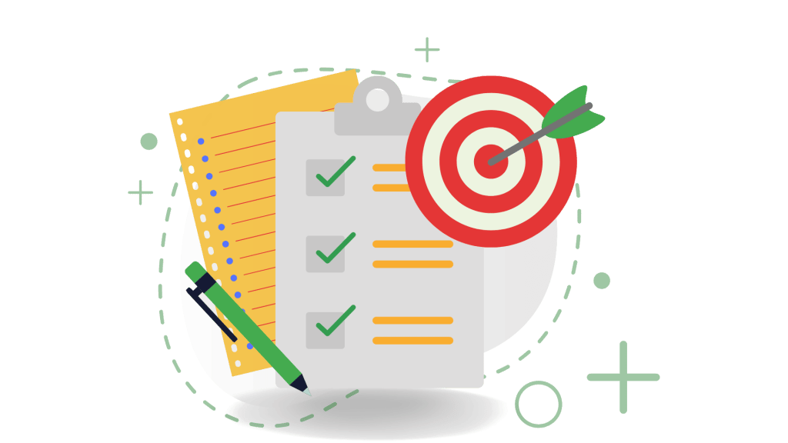

Dicas
Dicas para o vestibular nunca são demais, por isso nós da equipe SESI decidimos trazer para nossos alunos uma boa forma de se preparar para este novo ciclo que está chegando.
Plano de Estudo Perfeito
Organize um plano de estudos com cronograma bem definido e prazos para revisar os conteúdos.

Pesquise por Provas Anteriores
Busque informações e resolva provas anteriores dos vestibulares que você deseja prestar.
Revisão Constante
Faça revisões frequentes e não acumule matéria.
Simulados
Faça simulados regularmente e aprenda com os erros.
Descanso e Cuide da Saúde
Durma bem e mantenha uma alimentação saudável.

Foco na Leitura
Leia com atenção para melhorar sua interpretação de texto.